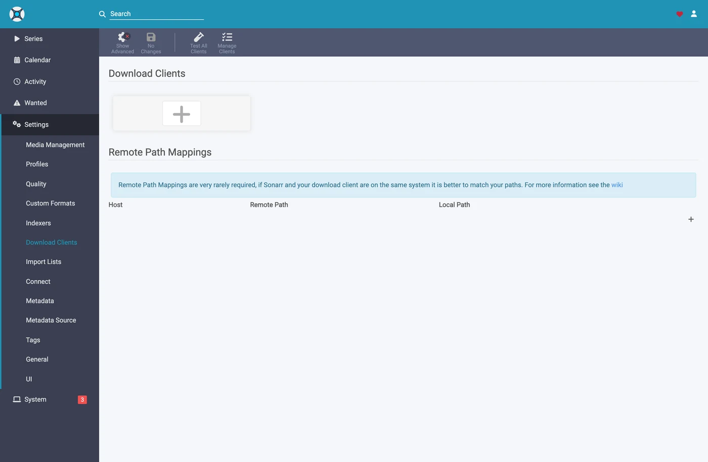
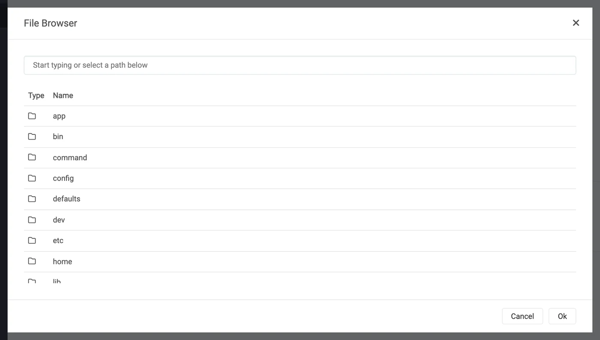
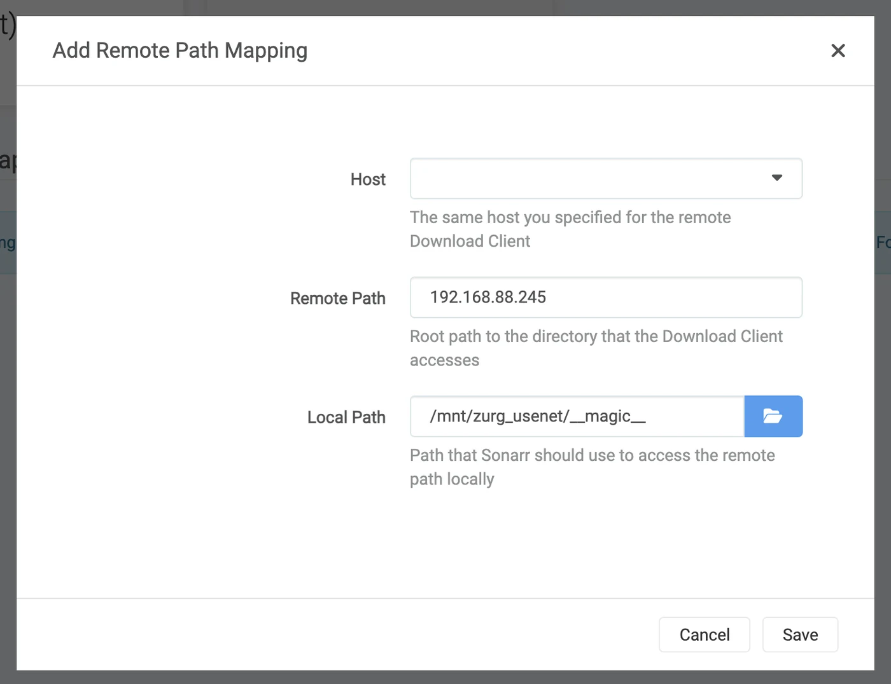
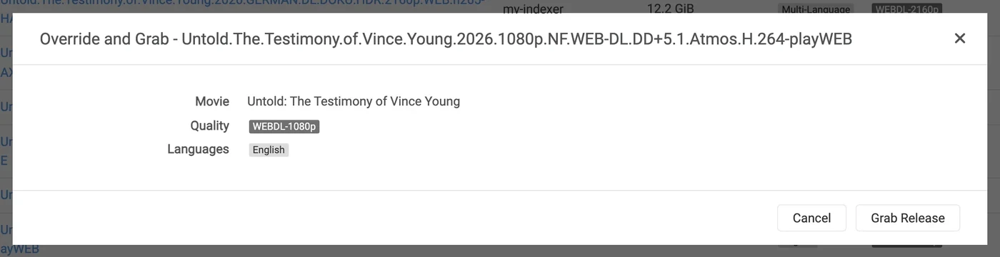
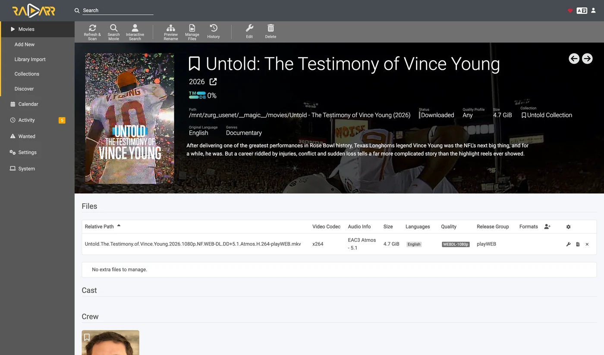

Sonarr وRadarr، خطوة بخطوة
هناك ثلاث طرق لاستخدام Sonarr وRadarr مع zurg. اختر من يبحث في zurg أو في *arrs. انظر أيّها تختار.
يمكن تشغيل الطريقتين الأوليين جنبًا إلى جنب. فهما تشتركان في المجلد نفسه __magic__.
وجّه Sonarr وRadarr إلى zurg لتنزيل المحتوى من Usenet دون عميل. لا يُنزَّل فيديو كامل ولا يُفك ضغطه أثناء عملية التنزيل. ومع ذلك، ما زالت ملفات NZB والذاكرة المؤقتة تستهلك مساحة القرص. تغطي هذه الصفحة Usenet. تستخدم نقطة نهاية التورنت العملاء نفسهم وتشارك المجلد. انظر Sonarr وRadarr للتورنت.
كل ما يلي التقط أثناء العمل على zurg بالإصدار nightly-993-g99bcf9a4، وSonarr بالإصدار 4.0.19.2979، وRadarr بالإصدار 6.3.0.10514، على تثبيت حي مع حساب Usenet حقيقي. وقد غُيّرت أسماء المضيف والمستخدم إلى you@zurg-server. أسماء المفهرسات هي my-indexer. مفاتيح API وأعداد المكتبة توضيحية. لم يُعدَّل أي شيء آخر في المخرجات الملتقطة. قُرأت أسطر السجل الخاصة بـ torbox_nzb من الكود المصدري لـ zurg بتاريخ 2026-11-09، ولم تُلتقط مباشرةً أثناء العمل.
قبل أن تبدأ
ثلاثة أمور يجب أن تتحقق. تحقّق منها كلها الآن، فكل واحد منها يفشل لاحقاً بشكل يبدو غير مرتبط بالمشكلة.
- لدى zurg مزوّد
nzb، أو مزوّدtorbox_nzb(TorBox Pro). بدون أحدهما لن يوجد شيء يقرأ ما تكتبه نقطة النهاية، وستُبلَّغ كل مهمة بأنها Failed بعد 30 دقيقة، عندما يتوقف zurg عن انتظار ظهورها في المكتبة. راجع Usenet، أو Usenet المستضاف على TorBox لمزوّدtorbox_nzb. magic.enabledمضبوط علىtrue. بدونه لن يوجد المجلد المكتمل، وسيفشل كل استيراد. راجع__magic__.- يرى *arr نقطة التركيب في المسار الذي يبلغ عنه zurg. إذا كان Sonarr يعمل داخل حاوية، فاقرأ
الخطوة 8 قبل أن تضبط أي شيء. إذا ثُبِّت كتطبيق عادي على الجهاز نفسه، فإنه يرى نقطة التركيب حيث يركّبها zurg، مع تحفظ واحد على كل نظام:- Linux: أي *arr يعمل بمستخدم مختلف عن مستخدم zurg يرى مجلداً فارغاً حتى تُفعَّل
user_allow_other. راجع إعداد Linux. - macOS: شغّله بالمستخدم نفسه الذي يعمل به zurg. نقطة التركيب هي
/Volumes/Zurgما لم تكن قد غيّرتmount_path. - Windows: شغّل Sonarr وRadarr كتطبيق في شريط المهام، وهو الخيار الذي يعرضه برنامج تثبيتهما، لا كخدمة Windows. محرك
Z:الخاص بـ zurg يتبع الجلسة التي سجّلت الدخول إليها، والخدمة تعمل خارجها، لذلك لا ترى المحرك. راجع قواعد الجلسة.
- Linux: أي *arr يعمل بمستخدم مختلف عن مستخدم zurg يرى مجلداً فارغاً حتى تُفعَّل
تحقّق من أول بندين مباشرةً من ملف الإعدادات، في مجلد العمل الخاص بـ zurg. على Windows، افتح config.yml في Notepad بدلاً من ذلك.
$ grep -A6 '^providers:' config.yml
providers:
- type: nzb
nntp:
host: news.example.com
port: 563
tls: true
username: <redacted>
password: <redacted>
$ grep -A4 '^magic:' config.yml
magic:
enabled: true
allow_delete: false
sidecar_max_mb: 32
sidecar_budget_mb: 2048allow_delete: false هو الإعداد الآمن الافتراضي ولا يؤثر في الاستيراد، فالحذف داخل __magic__ يخفي العنصر بدلاً من إزالة المحتوى من الحساب.
1. فعّل نقطة الوصول
بطريقتين، والنتيجة واحدة. كلتاهما تكتبان في config.yml وكلتاهما تحتاجان إلى إعادة تشغيل: المسارات التي تخدم __magic__ ونقطة نهاية SABnzbd تُسجَّل مرة واحدة فقط، عند بدء تشغيل zurg.
الخيار أ — لوحة التحكم
افتح لوحة تحكم zurg، واضغط على Config، ثم انزل إلى __magic__ & Download Clients. فعّل Serve __magic__ وSABnzbd Endpoint، ثم اضبط SABnzbd Categories على tv, movies.

Config هو المكان الذي يوجد فيه الإعداد، وMagic هو المكان الذي ستشاهد فيه عمليات السحب لاحقاً.

اترك حقل SABnzbd Completed Directory فارغاً إلا إذا كان *arr الخاص بك يركّب zurg في مسار مختلف عن المسار الذي يستخدمه zurg نفسه، انظر
الخيار ب — config.yml
أضف الكتلة يدويًا ثم أعد تشغيل zurg.
magic:
enabled: true
sabnzbd:
enabled: true
api_key: "" # empty = zurg generates one and keeps it
categories: [tv, movies]
complete_dir: "" # empty = <mount_path>/__magic__/__all__الفئات ليست مجلدات. كلها تشير إلى المكان نفسه، فمجلد أي مهمة هو مجلد الإصدار الخاص به داخل __magic__/__all__. وجود القائمة الغرض منه فقط أن يتوقف Sonarr وRadarr عن التحذير من فئة لا يجدانها. إذا كانت فئة Sonarr هي tv، فيجب أن تكون tv موجودة في هذه القائمة.
أعد تشغيل zurg، ثم تأكد من أن المزود طُبّق:

يكفي صف واحد بالقيمة nzb أو torbox_nzb لنقطة النهاية.
2. اعثر على مفتاح API
مفتاح API هو المصادقة الكاملة على هذه النقطة الطرفية، لذا اضبطه بشكل صحيح مرة واحدة، ولا تنشره في أي مكان عام.
إذا تركت api_key فارغًا، أنشأ zurg مفتاحًا عند أول تشغيل وكتبه في data/sabnzbd-apikey:
$ cat data/sabnzbd-apikey
0123456789abcdef0123456789abcdef
هذا مفتاح توضيحي، ومفتاحك سيكون مختلفًا. يبقى الملف بعد إعادة التشغيل، لذا يظل المفتاح ثابتًا بعد إنشائه.
إذا ضبطت api_key بنفسك، فسيكون في config.yml ولن يُكتب أي ملف. تخبرك لوحة التحكم بأي الحالتين أنت فيها، في أسفل الكتلة في الخطوة 1، وتظهر إما pinned in config.yml under sabnzbd.api_key أو generated and kept in data/sabnzbd-apikey.
هذه النقطة الطرفية خارج المصادقة الأساسية (basic auth) في zurg. لا يرسل Sonarr ولا Radarr أبدًا basic auth إلى عميل التنزيل، وطبقة HTTP عندهما تحوّل رد 401 إلى «unable to connect» بلا أي معلومة تساعدك على الحل، لذلك يستثني zurg المسار /api عمدًا. مفتاح API هو البوابة الوحيدة. تعامل مع المنفذ كما تتعامل مع بقية zurg: على شبكة موثوقة، أو خلف شيء يحميه.
3. تأكد أنه يستجيب
افعل هذا قبل أن تلمس Sonarr. يستغرق الأمر عشر ثوانٍ فقط، وهو يفصل بين "zurg مخطئ" و"الـ *arr مخطئ" طوال باقي الإعداد.
$ SAB=0123456789abcdef0123456789abcdef
$ ZURG=192.168.88.245:9996
$ curl -s "http://$ZURG/api?mode=version&apikey=$SAB&output=json"
{"version":"4.5.1"}
$ curl -s "http://$ZURG/api?mode=get_config&apikey=$SAB&output=json" \
| jq '.config.misc.complete_dir, [.config.categories[].name]'
"/mnt/zurg_usenet/__magic__/__all__"
[ "*", "tv", "movies" ]في PowerShell. اكتب curl.exe وليس curl: الأمر curl في Windows PowerShell هو أمر مختلف.
PS> $SAB = "0123456789abcdef0123456789abcdef"
PS> $ZURG = "192.168.88.245:9996"
PS> curl.exe -s "http://$ZURG/api?mode=version&apikey=$SAB&output=json"
{"version":"4.5.1"}
PS> (Invoke-RestMethod "http://$ZURG/api?mode=get_config&apikey=$SAB&output=json").config.misc.complete_dir
Z:/__magic__/__all__complete_dir هو المسار الذي سيسلّمه zurg للعملاء. تحقّق الآن أنه مسار يستطيعون فتحه.
ثم تحقّق من أن المفتاح الخاطئ يُرفض فعلاً (على Windows، استخدم curl.exe مع نفس الروابط):
$ curl -s "http://$ZURG/api?mode=queue&apikey=wrongkey&output=json"
{"status":false,"error":"API Key Incorrect"}
$ curl -s "http://$ZURG/api?mode=queue&output=json"
{"status":false,"error":"API Key Required"}mode=version ليس اختباراً للمصادقة. يرد بـ {"version":"4.5.1"} حتى مع مفتاح خاطئ، وهكذا يتصرف SABnzbd الحقيقي، وzurg ينسخ هذا السلوك. استخدم mode=queue أو mode=get_config عندما يكون ما تريد اختباره هو المفتاح فعلاً.
كلا شكلي الرابط يعملان، لذا يصلح أيٌّ منهما في حقل URL Base لدى العميل:
إذا أعاد /api خطأ 404 عادياً، فهذا يعني أن sabnzbd.enabled ما زال false أو أنك لم تعد تشغيل zurg منذ أن غيّرته.
4. أنشئ مجلدات الجذر
أنشئها قبل أن تضيفها، لأن نافذة Add Root Folder في تطبيقات *arr تتصفح نظام الملفات الحالي، ولن تعرض مجلدًا غير موجود.
$ mkdir -p /mnt/zurg_usenet/__magic__/tv /mnt/zurg_usenet/__magic__/movies
$ ls -d /mnt/zurg_usenet/__magic__/tv /mnt/zurg_usenet/__magic__/movies
/mnt/zurg_usenet/__magic__/movies
/mnt/zurg_usenet/__magic__/tvPS> New-Item -ItemType Directory -Force Z:\__magic__\tv, Z:\__magic__\moviesأو أنشئ المجلدين من Explorer.
استبدل /mnt/zurg_usenet بقيمة mount_path الخاصة بك. إذا تركتها فارغة، فستكون /mnt/zurg على Linux و/Volumes/Zurg على macOS وZ: على Windows. أسماء المجلدات من اختيارك؛ فالاسمان tv وmovies يطابقان الفئات فقط.
يجب أن يكون مجلد الجذر بجوار مجلد الإكمال، لا فيه ولا فوقه. يمرّر zurg للعملاء المسار __magic__/__all__، وهو مكتبتك كما يعرضها __all__. تقع مجلدات الجذر الخاصة بك بجواره، في __magic__/tv و__magic__/movies. ليس __magic__/__all__، وليس __magic__ نفسه، وليس /mnt/zurg_usenet. يُصدر كلا التطبيقين تحذير health check عندما يكون مجلد الجذر هو مجلد إخراج عميل التنزيل، ويُصدر Radarr تحذيرًا أيضًا عندما يكون مجلد الجذر يحتويه. أما المجلدات الشقيقة فلا تثير أيًّا من التحذيرين، وعند توجيه الاستيراد اليدوي إلى مجلد الإكمال يصبح أمامك إصدار واحد للنظر فيه بدلًا من مكتبتك كاملة.
هذا ما يحدث عند الخطأ. كلا المثالين حقيقيان، من التطبيقين. أُخذا قبل نقل مجلد الإكمال إلى __magic__/__all__، لذا فالمسارات فيهما أعلى بمستوى واحد من مساراتك، لكن القاعدتين اللتين يعرضانهما هما نفسهما:

Sonarr مع إضافة مجلد الإكمال نفسه كمجلد جذر — يُصدر تحذيرًا لأن مجلد الجذر هو مجلد الإخراج.

Radarr مع إضافة /mnt/zurg_usenet — يُصدر تحذيرًا للمجلد الأب أيضًا، وهذا ما لا يفعله Sonarr. انقل مجلد الجذر بجوار مجلد الإكمال فيختفي التحذيران.
5. أضف العميل في Sonarr
لقد صُممت Sonarr الجديدة تماماً لتحجب كل شيء خلف شاشة الإعداد الأولي. اختر Forms (Login Page)، وحدد اسم مستخدم وكلمة مرور، ثم انقر على Save.

لن يسمح لك بالمتابعة حتى يكون Authentication Method مضبوطاً على أي خيار غير None.

بعد الضغط على Save ستخرج من الحساب مرة واحدة وتنتقل إلى صفحة تسجيل الدخول.

Settings → Download Clients
انتقل إلى Settings → Download Clients. في التثبيت الجديد لا يوجد هنا سوى البطاقة +.

اضغط على + تحت "Download Clients"، وليس الزر الموجود أسفل منه تحت "Remote Path Mappings".
اختر SABnzbd من عمود Usenet.

zurg يحاكي SABnzbd تحديدًا، لذا لن يعمل أي شيء آخر في هذه القائمة.
تفتح النافذة بالإعدادات الافتراضية لـ SABnzbd نفسه: localhost والمنفذ 8080 ومن دون مفتاح.

ما الذي تضعه في كل حقل

مفتاح API الظاهر في الصورة مجرد مثال — الصق مفتاحك أنت.
في Docker، الاسم "localhost" واسم المضيف كلاهما يضلّلان. داخل الحاوية، يشير localhost إلى الحاوية نفسها، ويُحلّ اسم الجهاز عادةً إلى 127.0.1.1 — وهو أيضاً الحاوية نفسها. استخدم عنوان IP للشبكة المحلية أو Tailscale للمضيف، ولا تستخدم أبداً localhost ولا اسم المضيف المجرد، حتى لو كانا يعملان بشكل جيد من الطرفية لديك.
انقر Test. العلامة الخضراء تعني أن الفحوصات الأربعة للعميل نجحت: الإصدار، ومفتاح API، والإعداد العام، والفئة.

الآن انقر Save.

6. أضف مجلد الجذر في Sonarr
اذهب إلى Settings → Media Management وانزل إلى أسفل الصفحة.

اضغط على Add Root Folder. سيفتح مستعرض ملفات على نظام ملفات Sonarr، وفي Docker يكون هذا نظام ملفات الحاوية.

اكتب المسار في الخانة في الأعلى. إذا كان التركيب مرئياً فعلاً لـ Sonarr، فسيظهر ما بداخل __magic__ أثناء الكتابة: __all__ مع كل الإصدارات الموجودة فيه، وأي شيء أضفته بجانبه. هذا أسرع دليل ستحصل عليه على أن الربط صحيح.

إذا كانت القائمة فارغة أو ظهر خطأ، توقف وأصلح التركيب قبل المتابعة.

أكمل المسار إلى __magic__/tv (Z:\__magic__\tv على Windows) ثم اضغط على Ok.

إذا ظهر في Free Space رقم معقول، فهذا يعني أن Sonarr يستطيع قراءة معلومات التركيب. أما Unmapped Folders فيحسب الإصدارات الموجودة هناك بالفعل.
7. افعل الشيء نفسه في Radarr
متطابق تمامًا، مع تغيير قيمتين: الفئة هي movies ومجلد الجذر هو __magic__/movies.

أول تشغيل لـ Radarr يعمل بالطريقة نفسها: فعّل Forms auth، ثم سجّل الدخول.

Settings → Download Clients → +، ثم SABnzbd ضمن Usenet.

المضيف نفسه، والمنفذ نفسه، والمفتاح نفسه. الشيء الوحيد المختلف هو Category: movies، وليس tv.

Test، ثم علامة خضراء، ثم Save.

ثم اذهب إلى Settings → Media Management → Root Folders → Add Root Folder، وأضف /mnt/zurg_usenet/__magic__/movies.
zurg واحد، وعميلان، وطابور واحد. تُفلتر قائمة الانتظار والسجل في zurg بحسب الفئة فقط ولا شيء غيرها. إذا استخدم سوناران اثنان الفئة tv كلاهما، فسيرى كل منهما مهام الآخر. أما Sonarr على tv وRadarr على movies فلن يحدث ذلك. احتفظ بعميل واحد لكل فئة، ولن تواجه هذه المشكلة أبدًا.
8. إذا كان *arr لديك في Docker
هذه الخطوة مخصّصة لـ Docker على مضيف Linux. تعمل Docker Desktop على macOS وWindows داخل آلة افتراضية. يعتمد الربط rslave أدناه على انتشار التركيب في Linux (انظر Docker setup)، ولم يُختبر تمرير تركيب zurg إلى حاوية على هذه الأنظمة. على macOS وWindows، ثبّت Sonarr وRadarr كتطبيقات عادية بدلاً من ذلك، كما يصف
ثلاث مشكلات منفصلة. الثانية تكلّفك تنزيلاً جديداً عند كل استيراد. الثالثة لا تظهر إلا عند أول إعادة تشغيل لـ zurg.
المسار الذي يُبلغ عنه zurg يجب أن يكون مساراً يستطيع العميل فتحه
إذا كانت الحاوية تربط المكتبة في مسار مختلف عن المسار الذي يستخدمه zurg، ستفشل كل عملية استيراد برسالة download doesn't contain intermediate path أو بفحص الصحة الخاص بالمسار البعيد (remote-path). أصلحها بأي من الطريقتين، فكلتاهما تعمل:
- اضبط
sabnzbd.complete_dirعلى المسار الذي يراه العميل. هذه أسهل طريقة عندما يكون لديك عميل واحد، أو عدة عملاء يربطون المكتبة في المكان نفسه. - أضف remote path mapping في تطبيقات *arr. استخدم هذه الطريقة عندما يربط كل عميل المكتبة بطريقة مختلفة.
sabnzbd:
complete_dir: "/data/zurg/__magic__/__all__" # what the *arr sees, not what zurg seesبالنسبة للطريقة الثانية، اذهب إلى Settings → Download Clients واضغط على + تحت Remote Path Mappings، وهو الزر السفلي في الصفحة، وليس الزر الذي استخدمته في الخطوة 5.

يجب أن يكون Host مطابقاً تماماً لسلسلة المضيف التي كتبتها في عميل التحميل. Remote Path هو المسار الذي يبلغ عنه zurg، وLocal Path هو المكان الذي يراه فيه العميل.
وحدة تخزين واحدة لمجلد التنزيل ومجلدات الجذر
الاستيراد من __magic__/__all__ إلى __magic__/tv لا يكلّف شيئًا لأنه مجرد إعادة تسمية. وإعادة التسمية لا تعمل إلا داخل mount واحد. إذا أعطيت الحاوية المجلدين كوحدتي تخزين (volumes) منفصلتين، فستراهما كنظامي ملفات مختلفين. كلاهما فوق mount الخاص بـ zurg، ومع ذلك لا يغيّر هذا شيئًا.
volumes: # do not do this
- /mnt/zurg_usenet/__magic__/__all__:/downloads
- /mnt/zurg_usenet/__magic__/tv:/tvترفض النواة إعادة التسمية داخل الحاوية. عندها يقوم Sonarr وRadarr بنسخ الملف ثم حذف الأصل دون أي إشعار. كل عملية استيراد تنزّل الإصدار كاملًا من حسابك وتكتبه على قرص zurg. الاستيراد ينجح، لكنه يكون بطيئًا. حلقة واحدة بحجم 1.46 GB أخذت 50 ثانية واستهلكت 2.9 GB من حركة البيانات بهذه الطريقة. أما مع وحدة تخزين واحدة فقد استغرقت ثانية واحدة ولم تقرأ شيئًا.
أعطِ الحاوية وحدة تخزين واحدة تحتوي على mount الخاص بـ zurg بالكامل، ثم صل إلى مجلد التنزيل والمجلدات الجذرية من خلالها. الربط (bind) في القسم التالي يفعل ذلك بالضبط. بعدها يوجّه remote path mapping أو complete_dir العميل إلى __all__ داخل وحدة التخزين نفسها.
الاستيراد اليدوي المضبوط على Hardlink/Copy Files ينسخ الملفات أيضًا، لذلك اختر Move Files.
اربط الأصل الأب للتركيب، لا نقطة التركيب نفسها
هذه هي المشكلة التي تكلّفك فترة بعد الظهر كاملة، وهي أيضاً المجلد الوحيد الذي يطلب القسم أعلاه ربطه. إعادة تشغيل zurg تفصل /mnt/zurg_usenet ثم تعيد تركيبه. الحاوية التي ربطت نقطة التركيب نفسها تحتفظ باتصال fuse الذي بدأت به، وهو الآن ميت. عندها تجيب كل قراءة بـ Socket not connected، ولأن العميلين يتحققان من المساحة الحرة على المجلد الجذر قبل الالتقاط، يُرفض كل إصدار بصمت:
FreeSpaceSpecification: Socket not connectedلا يذكر أي من العميلين أن التركيب أصبح قديماً، والمجلد ما زال يظهر داخل الحاوية، وعملية الالتقاط اليدوي التي تُرسل مباشرة إلى العميل ما زالت تعمل. ما ستراه هو *arr توقف عن البحث بهدوء.
اربط المجلد الأب باستخدام rslave، وعندها تصل إعادة التركيب كحدث تركيب فرعي تتبعه الحاوية:
volumes:
- type: bind
source: /mnt # the parent, not /mnt/zurg_usenet
target: /mnt
bind:
propagation: rslaveتحقق من الحاوية بعد أي إعادة تشغيل لـ zurg. تريد أن ترى حجماً، لا خطأً:
$ docker exec radarr df -h /mnt/zurg_usenet
Filesystem Size Used Avail Use% Mounted on
zurg{PGSq4}: 1.0P 0 1.0P 0% /mnt/zurg_usenetالرقم بالبيتابايت يعني أن zurg يعرض نظام ملفات افتراضياً، وليس قرصاً حقيقياً. هذا متوقع، وهو بالضبط ما يُرضي فحص المساحة الحرة لدى *arr.
9. راقب عملية grab واحدة وهي تمر
أضِف عنصراً واحداً، واجلبه يدوياً، وتابعه حتى النهاية. كل ما يلي هو عملية جلب حقيقية عبر الإعداد الموضح أعلاه.
Grab it
افتح فيلمًا (أو حلقة)، واضغط Interactive Search، واختر إصدارًا.

عمود Source يظهر nzb، وهذا هو البروتوكول الذي يستطيع zurg التعامل معه.
اضغط على زر السهم الدائري في نهاية الصف لالتقاط الإصدار. إذا لم يتطابق الإصدار بشكل صحيح، يطلب منك العميل تأكيد الربط أولاً:

يظهر Override and Grab عندما يريد العميل منك تأكيد ماهية الإصدار. تحقق من الربط واضغط Grab Release. الالتقاط التلقائي العادي لا يظهر هذا المربع أبدًا.
إنه يصل إلى قائمة الانتظار

Activity → Queue مباشرةً بعد عملية الإرسال. لاحظ شريط التقدم: هو ممتلئ، وTime Left يظهر على شكل شرطة. لا يوجد تنزيل لقياسه، لذلك تكون المهمة إما في الصف أو مكتملة، ولا توجد حالة بينهما. الصفوف الأخرى هنا تعود إلى Radarr ثانٍ موجَّه إلى نفس zurg وعلى نفس الفئة — راجع الملاحظة في الخطوة 7.
يكتب zurg ملف NZB ثم يقرؤه
Aug 25 14:44:03 zurg-server zurg[3034965]: INFO nzb Loaded NZB
Last.Week.Tonight.with.John.Oliver.S13E22.480p.WEB.x264-RMTeam.nzb: 4 files
Aug 25 14:50:28 zurg-server zurg[3034965]: INFO nzb Loaded NZB
Untold.The.Testimony.of.Vince.Young.2026.1080p.NF.WEB-DL.DD+5.1.Atmos.H.264-playWEB.nzb: 9 filesLoaded NZB … : N files هو السطر الذي يدل على أن ملف NZB تمت قراءته بنجاح. إذا ظهرت مهمة على أنها Failed بعد 30 دقيقة، أي عندما يتوقف zurg عن الانتظار حتى تظهر في المكتبة، فهذا السطر هو ما يكون مفقودًا.
يحدث الاستيراد

Activity → History. حدثان بفارق ثوانٍ: Grabbed، ثم Movie Imported.

Status: Downloaded، Size 4.7 GiB — ولم يُنزَّل أي شيء.
تأكد أن الملف حقيقي
الاستيراد نقل الملف إلى مجلد الجذر (root folder). اقرأ طرفيه الاثنين واسأل ffprobe عنه:
إذا لم يجد الـ shell الأمر ffprobe، استخدم ~/zurg/bin/ffprobe، فالإعداد يضع نسخته الخاصة هناك إذا لم يكن مثبتًا أي نسخة.
$ ls -la "/mnt/zurg_usenet/__magic__/movies/Untold - The Testimony of Vince Young (2026)/"
-rw-r--r-- 1 you you 4920958828 Aug 25 14:53 Untold.The.Testimony…playWEB.mkv
$ dd if="$F" bs=1M count=1 >/dev/null
1048576 bytes (1.0 MB, 1.0 MiB) copied, 0.0429446 s, 24.4 MB/s
$ ffprobe -v error -show_entries format=duration,size,format_name \
-of default=noprint_wrappers=1 "$F"
format_name=matroska,webm
duration=4709.440000
size=4920958828من مجلد zurg في PowerShell. وضع الإعداد bin\ffprobe.exe هناك إلا إذا كان ffprobe موجودًا أصلًا في PATH لديك، وفي هذه الحالة اكتب ffprobe بدلًا من ذلك:
PS> $F = Get-Item "Z:\__magic__\movies\Untold - The Testimony of Vince Young (2026)\*.mkv"
PS> $F.Length
4920958828
PS> bin\ffprobe.exe -v error -show_entries format=duration,size,format_name -of default=noprint_wrappers=1 $F.FullName
format_name=matroska,webm
duration=4709.440000
size=4920958828ملف Matroska مدته 78 دقيقة، يُبث من مقالات Usenet عند الطلب. البيانات تصل عندما يقرأها شيء ما، وليس عندما يستورد *arr الملف.
10. إضافة إصدار يدوياً
أحياناً لا يلتقط Sonarr أو Radarr الإصدار الذي تريده أبداً. قد لا تحتوي المفهرسات (indexers) التي يبحث فيها على هذا الإصدار، أو قد يرفضه ملف الجودة (quality profile) أو تنسيق مخصص (custom format). يمكنك أن تعطي zurg ملف NZB بنفسك تحت فئة (category) التطبيق الذي يفترض أن يستورده. ذلك التطبيق يستورده بعد ذلك كأنه التقطه بنفسه.
إذا كان الإصدار موجوداً في مفهرس يبحث فيه التطبيق، فجرّب التطبيق أولاً. Interactive Search يعرض الإصدارات المرفوضة أيضاً. اختيار أحدها يرسله إلى zurg مثل أي التقاط عادي. Radarr التقط إصدار IMAX رفضه ملف الجودة لأنه حصل على 0 نقطة مقابل تنسيق مخصص مطلوب، ثم استورده.
$ SAB=0123456789abcdef0123456789abcdef
$ ZURG=192.168.88.245:9996
# an NZB file you already have (the upload field is called name, as in SABnzbd)
$ curl -s "http://$ZURG/api?mode=addfile&apikey=$SAB&cat=movies" \
-F 'name=@Movie.Title.2024.1080p.WEB-DL.nzb'
{"status":true,"nzo_ids":["SABnzbd_nzo_…"]}
# or a link to one, which zurg downloads itself
$ curl -s -G "http://$ZURG/api" \
--data-urlencode mode=addurl --data-urlencode "apikey=$SAB" --data-urlencode cat=movies \
--data-urlencode 'name=https://indexer.example/getnzb/<id>?r=<indexer-key>' \
--data-urlencode nzbname=Movie.Title.2024.1080p.WEB-DL
{"status":true,"nzo_ids":["SABnzbd_nzo_…"]}في PowerShell، استخدم curl.exe بدلاً من curl. كل واحد منهما يرد بـ {"status":true,"nzo_ids":[…]} كما ورد أعلاه.
$SAB = "0123456789abcdef0123456789abcdef"
$ZURG = "192.168.88.245:9996"
# an NZB file you already have (the upload field is called name, as in SABnzbd)
curl.exe -s "http://$ZURG/api?mode=addfile&apikey=$SAB&cat=movies" -F "name=@Movie.Title.2024.1080p.WEB-DL.nzb"
# or a link to one, which zurg downloads itself
curl.exe -s -G "http://$ZURG/api" `
--data-urlencode mode=addurl --data-urlencode "apikey=$SAB" --data-urlencode cat=movies `
--data-urlencode "name=https://indexer.example/getnzb/<id>?r=<indexer-key>" `
--data-urlencode nzbname=Movie.Title.2024.1080p.WEB-DL--data-urlencode يُبقي علامتي ? و& الخاصتين بالرابط داخل name. تظهر المهمة في Queue الخاص بالتطبيق عند فحصه التالي، أي خلال دقيقة.
خمسة أمور تحدد ما يحدث بعد ذلك.
- يجب أن يكون الفيلم أو المسلسل موجوداً في ذلك التطبيق مسبقاً. لا يستورد إلا ما يستطيع مطابقته مع شيء يديره.
- يجب أن يصف الاسم محتواه. تأخذ المهمة اسم ملف NZB، أو
nzbnameإذا مررته. وبدونnzbname، يستخدمaddurlاسم الملف الذي يرسله المفهرس. أضف السنة إلى الاسم. - الفئة تختار التطبيق.
cat=moviesيصل إلى Radarr الذي يستخدم عميل التنزيلmovies. كل تطبيق ينظر فقط إلى فئته. - ملف الجودة لا يمنع الاستيراد. الملف الذي تملكه بالفعل قد يمنعه. Radarr لا يتحقق لا من الجودات المسموح بها ولا من الحد الأدنى لنقاط التنسيق المخصص عند الاستيراد. استورد ملف 720p BluRay بنقاط 0 إلى ملف جودة لا يسمح إلا بـ 2160p ويشترط نقاط 100. واستورد أيضاً ملف 1080p WEBRip إلى فيلم لا يسمح ملفه الشخصي إلا بـ 720p. ثم أخذ ملف 1080p BluRay فوقه كترقية وحذف WEBRip. وإصدار WEB-DL أُضيف بعد ذلك توقف في Activity برسالة Not an upgrade for existing movie file. Activity → Queue → Manual Import يستورده رغم ذلك ويستبدل الملف.
- الفشل عليك أنت أن تنظفه. التطبيق لا يضع في القائمة السوداء (blocklist) ولا يزيل تنزيلاً لم يلتقطه بنفسه. إصدار انتهت مقالاته من خوادم الأخبار ظهر كـ Failed من zurg وبقي في قائمة Radarr مع الرسالة Download has failed wasn't grabbed by Radarr, skipping automatic download handling. أزله من القائمة واختر إصداراً آخر.
جرى القياس في 2026-10-10 باستخدام Radarr 6.3، مع addfile وaddurl معاً، بما في ذلك ملف جودة يشترط تنسيقاً مخصصاً مبنياً على اسم الإصدار. كل استيراد كان إعادة تسمية إلى __magic__/movies ولم يُنسخ أي شيء. لم يُختبر Sonarr.
شكراً لـ .telmen على Discord لسؤاله عن كيفية فعل ذلك مع Usenet.
المشاهدة من جهة zurg
صفحة /magic/ في zurg تعرض كل ملف NZB أرسله إليها أي طلب حتى الآن. يحذف Sonarr وRadarr الوظائف التي أخذوها، ويُحفظ السجل لمدة أسبوع بعدها، حتى تعطي عملية الاستطلاع التي تتزامن مع الحذف الجواب نفسه في كل مرة. يمكنك مسح وظيفة حالتها Failed أو Stuck (في الانتظار لأكثر من ساعة) ولن يحذفها أي عميل أبدًا، مثلًا بعد أن تتوقف عن استخدام zurg كعميل تنزيل لديه، وذلك بالضغط مطولًا على زر Clear الخاص بها. مسح الوظيفة يحذف ملف NZB الخاص بها، إلا إذا كان الاستيراد ما زال يستخدمه.

Placements هي الملفات التي نقلتها العملاء، وtombstones هي مجلدات الوظائف التي حذفوها بعد ذلك. إذا كان العميل ينسخ بدل أن ينقل، تظهر في الصفحة جدول أحمر بعنوان Imports that were copies. يحوّل zurg هذه النسخ إلى placements ثم يحذفها، لكن كل واحدة منها كانت تنزيلًا كاملًا، لذا أصلح إعداد الـ volumes.

State هو الخلاصة كلها. Queued يعني أن zurg لم ينتهِ من الإصدار بعد، إما لأن المكتبة لم تدرجه، أو لأن أحجام ملفاته لم تستقر، أو لأن مقالاته لم تُفحص بعد. Completed يعني أنه جاهز للاستيراد. وRelease يسمي المجلد الذي يستورد منه العميل.
عمود Release لا يُخزَّن، بل يُقرأ من المكتبة في كل استطلاع. أعد تسمية الإصدار في لوحة zurg، أو اترك عملية repair تعيد بناءه، أو اترك zurg يضيف لاحقة لأن إصدارين يتشاركان الاسم، وستتبعه الوظيفة أينما ذهب.
ما الذي يعمل وما الذي لا يعمل
ما يعمل:
- اختبار الاتصال، جميع الفحوصات الأربعة، في العميلين كليهما.
- الجلب، وقائمة الانتظار، والسجل، والاستيراد بإعادة التسمية، وتنظيف ما بعد الاستيراد.
- إعادة جلب الإصدار نفسه. تحصل كل عملية جلب لاحقة على معرّف مهمة خاص بها، فيتصرف العميل بناءً عليها بدلاً من إعادة استخدام نتيجة المهمة القديمة. يبقى الإصدار الأساسي كما هو. إعادة جلب إصدار كان استيراد سابق قد أفرغه تُبلَّغ بأنها Failed. مجلده تحت
__magic__/__all__لم يبق فيه ما يُستورد، وتجعل حالة Failed العميل يضع الإصدار في القائمة السوداء ويجلب بديلاً. أما عملية الجلب التي أفرغته فتستمر في الإبلاغ عن Completed حتى يحذفها العميل. - إزالة مهمة من قائمة الانتظار، مع حذف ملف NZB أو دونه.
mode=addurl، لمن يمرّر رابطاً بدلاً من رفع الملف، سواء كان إنساناً أو أتمتةً. ولا يستخدمه أيٌّ من *arr.
ما لا يفعله:
- لا يوجد تقدّم. المهمة إما في قائمة الانتظار أو مكتملة؛ لا توجد نسبة مئوية بينهما، لأنه لا يوجد تنزيل لقياسه. تعرض قائمة الانتظار الحجم المعلن في ملف NZB حتى لا يبقى السطر فارغاً.
- لا توجد إيقاف مؤقت، ولا استئناف، ولا حدّ للسرعة، ولا أولوية، ولا سكربت ما بعد المعالجة. يملك SABnzbd هذه كلها، أما zurg فليس لديه ما يطبّقها عليه.
- يُتجاهل
del_filesعند حذف مهمة منتهية من السجل. (بالنسبة إلى مهمة Failed يحذف ملف NZB إذا لم يُستورد منه شيء.) يقصد العميل بذلك "مجلد المهمة صار ملكك من جديد"، لكن الملف الذي استورده للتو ما زال يُقدَّم من ملف NZB ذاك. المجلد الذي أراد إزالته قد زال، فقد حذفه بنفسه عبر التركيب. - لا تستطيع Basic auth حماية نقطة الوصول هذه. مفتاح API هو البوابة الوحيدة.
إشارة الفشل. يُبلَّغ عن إصدار لا يحتوي على أي شيء قابل للاستيراد بأنه Failed، ويضعه العميلان في القائمة السوداء ويجلبان بديلاً. ويشمل ذلك إصداراً تكون ملفاته كلها تالفة أو محذوفة أو مُصفّاة، وإصداراً لا يحتوي إلا على ملفات .par2 و.sfv وملفات مساعدة، وإصداراً تكون كل ملفاته بصيغ لا يُشغَّل أيٌّ منها، وهذا ما تبدو عليه مشاركة مموّهة سمّت مجموعة RAR الخاصة بها .z001….z133، وأرشيفاً فُتح ووُجد أنه لا يحتوي على وسائط. مجموعة RAR تُعدّ محتوى لا هيكلاً مساعداً، إذ يبثّ zurg الفيديو منها مباشرةً. وإذا كان إصدار يحتوي فعلاً على شيء لا يعرف zurg امتداده، فوسّع addl_playable_extensions بدلاً من إدراجه في القائمة السوداء.
تُفحص المقالات قبل الإبلاغ عن اكتمال المهمة. ينتظر zurg حتى تُدرج المكتبة الإصدار وتستقر أحجام ملفاته. ثم يسأل خوادم الأخبار عن بداية كل ملف محتوى ونهايته، أي أول ست عشرة مقالة وآخر مقالة. ويُنزّل أيضاً أول مقالة من كل ملف. وهذا يصل إلى أربع وستين مقالة كحد أقصى، زائداً بضع مقالات إضافية في إصدار لا يحتوي إلا على عدد قليل من الملفات. بعض خوادم الأخبار ما زالت تقول إن المقالة موجودة بعد أن أُزيل محتواها، ولا يكشف ذلك إلا التنزيل. كما أن المقالة المُنزَّلة تُظهر أيضاً أنها تنتمي إلى هذه المشاركة لا إلى رفعة أخرى. تبقى المهمة Queued حتى يُجاب على ذلك. أما الأضرار التي لا تطالها العينة فلا تُكتشف هنا، بل تظهر عند القراءة التي تصل إليها. الإصدار الذي غابت مقالاته يخضع أولاً لإصلاح PAR2، ويُفحص مجدداً بعد انتهاء الإصلاح. أما الإصدار الذي اكتمل من جديد فيمضي قدماً. والإصدار الذي ما زالت تنقصه مقالات، أو الذي لا يستطيع أي شيء إصلاحه، يُبلَّغ عنه بأنه Failed مع عدد المقالات الناقصة. وهذا فشل تنزيل، وهو الفشل الذي يتصرف العميلان بناءً عليه: يضعانه في القائمة السوداء ويجلبان بديلاً تلقائياً، بدلاً من استيراد شيء لن يُشغَّل. مع torbox_nzb لا توجد خوادم أخبار ولا فحص للمقالات: يُفحص الجلب من خلال ما إذا كانت TorBox قد جلبته.
الفحص الذي لا يكتمل لا ينتظر إلى الأبد. أحياناً لا يستطيع الفحص أن يكتمل أصلاً. قد يكون مجمع الاتصالات متوقفاً، أو الحساب مُقيَّداً بالسرعة، أو انتهى وقت الانتظار. هذه ليست إجابة. تبقى المهمة Queued ويُسأل عنها مرة أخرى بعد دقيقة. يحسب zurg المحاولات على المهمة حتى لا تُنسى عند إعادة التشغيل. بعد ثلاثين محاولة فاشلة متتالية تمتد على ثلاث ساعات على الأقل تنتقل المهمة إلى السجل بحالة Failed. تتضمن الرسالة عدد المحاولات والمدة وآخر خطأ. أما انقطاع يتمثل في رفض صريح متكرر فيصل إلى ثلاثين محاولة خلال ساعة واحدة، ولا يُفشل قائمة الانتظار بسببه.
الإصدار الذي يغادر المكتبة يُفشل مهمته. قد يُحذف إصدار من لوحة التحكم، أو يُزال ملف NZB الخاص به من مجلد المراقبة، أو يُسقطه كل حساب. تبقى مهمته Queued لمدة خمس عشرة دقيقة ثم تنتقل إلى السجل بحالة Failed. يضعه العميل في القائمة السوداء ويجلب إصداراً آخر. وجود هذه المهلة من أجل عمليات إعادة التشغيل، لأن المكتبة تُدرج كل الإصدارات على أنها غير مُدرجة أثناء تحميلها، ولا يجوز أن يُفهم ذلك على أنه حذف. لا يفشل شيء على هذا الأساس خلال الخمس عشرة دقيقة الأولى بعد بدء تشغيل zurg. أما المهمة التي لم تُدرج المكتبة إصدارها قط فلا تتأثر، لأنها ما زالت في طور الوصول.
استكشاف الأخطاء وإصلاحها
ما زلت عالقاً؟ اسأل في منتدى zurg-support على Discord. يشرح الحصول على المساعدة ما يجب تضمينه.